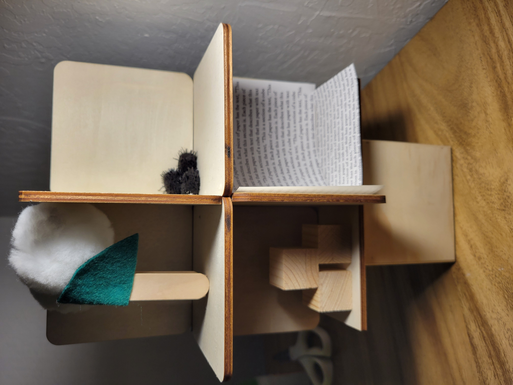
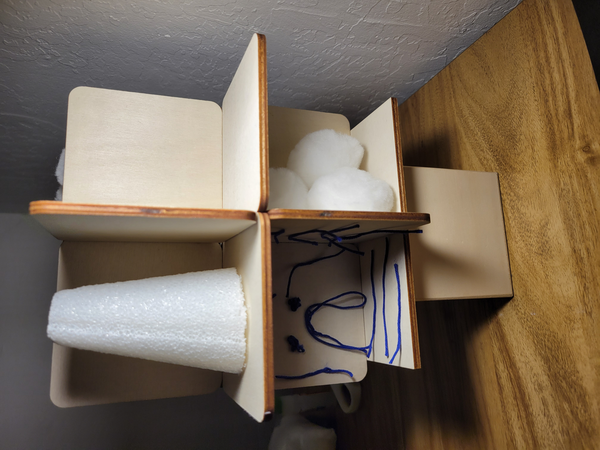

RODEL LASERNA
( HE/HIM )
Portfolio: LINK
About the Artist
Rodel Laserna is an artist who made digital and physical artworks. He made digital artworks of various formats ranging from compositions to video. His physical artworks were made in various mediums, but his most notable artworks used primarily cardboard. Now, he is working towards his Digital Media Arts bachelor's degree. He is also currently working on an interactive sculpture with technological elements he names “Cubic Ideals” for his Art Exhibition class.
Cubic Ideals
“Cubic Ideals”, the artwork I am currently working on for my Art Exhibition class, is a first for me. In my perspective, this is a type of artwork I have never done before, and it feels unique and bizarre at the same time. It's unique because of the concept in which it showcases eight different expressions of different ideas. It's bizarre because of how these eight ideas are expressed, and the mystery surrounding them, the mysterious puzzle that could be solved. Any viewer encountering this artwork could attempt to crack the riddle hidden within this cube, and they will have to make deductions in the process of attempting to solve it. An infinite number of guesses can be made on a digital device that will be right in front of the cube. This artwork's multi-sided concept is a result of the person I have become and am becoming. Over the past several years, I have become more curious about other cultures in the world, with a particular affinity towards French culture. I've been growing more and more close to French culture, including its cuisine and language. I've been growing in the language more the past several years. For every culture I was curious towards, one could say I have an ideal for every one of them, which is a direct parallel to the eight ideals of this artwork.

